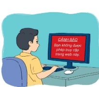
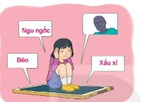
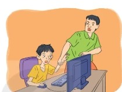

Dành cho giáo viên
Theo dõi lớp
| Học sinh / Nhóm | Đã nộp | Cập nhật |
|---|
Bước 1
1 Khởi động
Khởi động Internet có hai mặt
Internet có vai trò to lớn trong cuộc sống hiện nay. Internet tác động tích cực đến nhiều mặt của xã hội. Bên cạnh đó Internet cũng có các tác động tiêu cực. Trên thế giới cũng như ở Việt Nam, ngày càng xảy ra nhiều sự việc đau lòng liên quan đến việc sử dụng mạng. Các nguyên nhân thường do bắt nạt trên mạng, nghiện Internet, nghiện trò chơi trực tuyến,… Ứng xử trên mạng có văn hoá và đúng quy tắc, sử dụng Internet hợp lí sẽ giúp mỗi chúng ta có một cuộc sống văn minh, an toàn hơn.
Ghi bài Khởi động
Sau khi thầy cô chốt, em chép nội dung dưới đây vào vở.
Bước 2 · Hình thành kiến thức mới
2.1 Giao tiếp, ứng xử có văn hoá qua mạng
Hoạt động 1 Ngôn ngữ giao tiếp qua mạng
1. Em biết những phương thức giao tiếp qua mạng nào? Em đã từng sử dụng những phương thức nào?
2. Theo em những đặc điểm khác nhau giữa giao tiếp gặp gỡ trực tiếp và giao tiếp qua mạng là gì?
3. Tại sao có những bạn khi giao tiếp qua mạng lại thiếu văn minh hơn so với khi giao tiếp trực tiếp?
2. Theo em những đặc điểm khác nhau giữa giao tiếp gặp gỡ trực tiếp và giao tiếp qua mạng là gì?
3. Tại sao có những bạn khi giao tiếp qua mạng lại thiếu văn minh hơn so với khi giao tiếp trực tiếp?
Hoạt động 2 Nên hay không nên?
Đọc mục 1 (SGK trang 23). Khi chưa có mạng Internet, phương thức giao tiếp chủ yếu của chúng ta là nói chuyện trực tiếp, gọi điện thoại, gửi thư qua bưu điện,… Ngày nay, với sự phổ biến của Internet và mạng xã hội, giao tiếp qua mạng được nhiều người ưa thích sử dụng. Một số phương thức giao tiếp qua mạng phổ biến là: gửi và nhận thư điện tử, gửi và nhận tin nhắn, nói chuyện trực tuyến thông qua các ứng dụng, trên các diễn đàn, trên mạng xã hội,… Các mối quan hệ qua mạng thường có phạm vi rộng, đa dạng và khó kiểm soát hơn trong đời thực. Vì vậy, để trở thành người giao tiếp lịch sự, ứng xử có văn hoá qua mạng, mỗi người cần xác định cho mình những điều nên và không nên.
Em hãy cùng các bạn thảo luận những điều các em nghĩ là nên và không nên làm khi giao tiếp qua mạng rồi sắp xếp vào hai nhóm tương ứng.
Em hãy cùng các bạn thảo luận những điều các em nghĩ là nên và không nên làm khi giao tiếp qua mạng rồi sắp xếp vào hai nhóm tương ứng.
Câu hỏi SGK trang 24
Ghi bài 1. Giao tiếp có văn hoá qua mạng
Sau khi thầy cô chốt, em chép nội dung dưới đây vào vở.
Bước 2 · Hình thành kiến thức mới
2.2 Làm gì khi gặp thông tin có nội dung xấu trên mạng?
Hoạt động 3 Xử lí tình huống khi đang truy cập mạng
Khi em đang truy cập mạng, máy tính thỉnh thoảng lại hiện lên những trang web có nội dung bạo lực, nội dung không phù hợp với lứa tuổi của em, em sẽ làm gì?
Đọc mục 2 (SGK trang 24). Em biết có bao nhiêu trang web trên Internet không? Không ai có câu trả lời chính xác. Con số ước đoán là có hàng tỉ trang web và mỗi ngày lại có rất nhiều trang web mới xuất hiện. Chúng ta dễ dàng tìm kiếm những thông tin hữu ích phục vụ học tập, giải trí, mua sắm,… từ các trang web. Tuy nhiên, cũng có nhiều trang web chứa nội dung xấu, thông tin không phù hợp với lứa tuổi mà chúng ta cần tránh. Ví dụ: các trang web có nội dung không lành mạnh; có thông tin về cờ bạc, chất gây nghiện; có thông tin kích động bạo lực;… Sử dụng phần mềm chặn truy cập trang web xấu là một cách bảo vệ người sử dụng trên mạng. Tuy nhiên, tự xây dựng ý thức tốt cho bản thân khi sử dụng mạng chính là công cụ bảo vệ tốt nhất.

Câu hỏi SGK trang 25
Ghi bài 2. Gặp thông tin xấu trên mạng
Sau khi thầy cô chốt, em chép nội dung dưới đây vào vở.
Bước 2 · Hình thành kiến thức mới
2.3 Tác hại và cách phòng tránh bệnh nghiện Internet
Hoạt động 4 Nghiện Internet – Biểu hiện và tác hại
1. Trung bình một ngày em sử dụng máy tính bao nhiêu giờ?
2. Em có chơi trò chơi điện tử và sử dụng mạng xã hội không? Nếu có thì khoảng bao nhiêu giờ một tuần?
3. Theo em các biểu hiện và tác hại của bệnh nghiện Internet là gì?
2. Em có chơi trò chơi điện tử và sử dụng mạng xã hội không? Nếu có thì khoảng bao nhiêu giờ một tuần?
3. Theo em các biểu hiện và tác hại của bệnh nghiện Internet là gì?
Đọc hiểu Tác hại và lời khuyên
Đọc mục 3 (SGK trang 25–26). Nếu chúng ta thiếu ý thức, không quản lí đúng việc sử dụng thiết bị điện tử của mình, những tác hại tiềm tàng mà Internet gây ra là rất lớn. Chơi trò chơi điện tử quá nhiều, sử dụng mạng xã hội liên tục sẽ làm ảnh hưởng tới mối quan hệ với gia đình và bạn bè, tới việc học tập của bản thân thì được coi là biểu hiện của bệnh nghiện Internet. Một số tác hại ảnh hưởng tới người nghiện Internet:
- Thiếu giao tiếp với thế giới xung quanh: dùng Internet quá nhiều dẫn tới chán ăn, sụt cân, không ngủ được, thể lực giảm sút, không muốn giao tiếp với ai, chỉ muốn ở một mình trong phòng với thiết bị kết nối Internet.
- Khó tập trung vào công việc, học tập: việc gián đoạn lặp đi lặp lại ảnh hưởng đến sự tập trung. Nếu cứ 10 phút lại xem điện thoại hay kiểm tra tin nhắn, liệu chúng ta có tập trung vào việc học được không?
- Tăng nguy cơ tham gia vào các vụ bắt nạt trên mạng: người nghiện Internet dễ có hành vi hung hăng, cố ý làm tổn thương hoặc đe doạ người khác: phát tán tin đồn sai, để lại tin nhắn nói xấu, chia sẻ ảnh và thông tin cá nhân của người khác khi không được đồng ý.
- Dễ bị dẫn dắt đến các trang thông tin xấu: trên mạng, thông tin lan truyền rộng rãi, khó kiểm soát; nhiều trang có nội dung xấu có thể được gửi tới một cách vô tình hay cố ý.
- Dễ bị nghiện trò chơi trực tuyến: người nghiện thường phải chơi trong thời gian dài để đạt mục tiêu trò chơi đưa ra; dần dẫn tới tâm trạng dễ cáu gắt, lầm lì, ít nói; những lúc không được chơi thì thấy thiếu thốn, bồn chồn, khó chịu.


Tự kiểm tra: Em có các biểu hiện nào trong các hành vi sau đây?
Phần này chỉ để em tự soi lại mình, không gửi lên cho thầy cô.
Để không biến mình thành một người nghiện Internet, em hãy tham khảo một số lời khuyên dưới đây:
| Chia sẻ | Rời xa | Giới hạn | Theo đuổi |
|---|---|---|---|
| Tìm một người tin tưởng để thường xuyên chia sẻ, tâm sự. Bố mẹ, thầy cô, anh chị em ruột là những người phù hợp nhất. | Di chuyển máy tính khỏi phòng riêng của mình, ví dụ tới nơi sinh hoạt chung của gia đình, để được mọi người giúp theo dõi thời gian sử dụng Internet. | Cài đặt phần mềm giới hạn thời gian sử dụng Internet. Điều này giúp quản lí thời gian sử dụng mạng phù hợp. | Tìm và theo đuổi những sở thích, thói quen tốt như đọc sách, chơi thể thao, tham gia dự án làm từ thiện. |
Góc cha mẹ. Cha mẹ cần bảo vệ con cái. Hãy cởi mở giao tiếp với con, hướng dẫn con sử dụng Internet một cách an toàn, đúng mức thay vì cấm đoán.
Hoạt động 5 Hồi sinh cây
Người bị bệnh nghiện Internet có thể được ví như một cái cây có nguy cơ úa tàn. Em hãy cùng các bạn trong nhóm vẽ một cây tương tự lên một tờ giấy to để tạo một tấm áp phích bằng cách vẽ thêm lá, hoa cho cây và ghi trên đó những điều nên làm để phòng tránh bệnh nghiện Internet, giúp cây xanh tươi trở lại. Có thể thử trước trên bảng dưới đây.
Chọn những việc nên làm (việc đúng thêm lá, việc sai làm rụng lá)
Ghi bài 3. Bệnh nghiện Internet
Sau khi thầy cô chốt, em chép nội dung dưới đây vào vở.
Bước 3
3 Luyện tập
Luyện tập Câu hỏi SGK trang 27
Ghi bài Luyện tập
Sau khi thầy cô chốt, em chép nội dung dưới đây vào vở.
Bước 4
4 Vận dụng
Vận dụng Sản phẩm nhóm, giúp bạn
Ghi bài Vận dụng
Sau khi thầy cô chốt, em chép nội dung dưới đây vào vở.